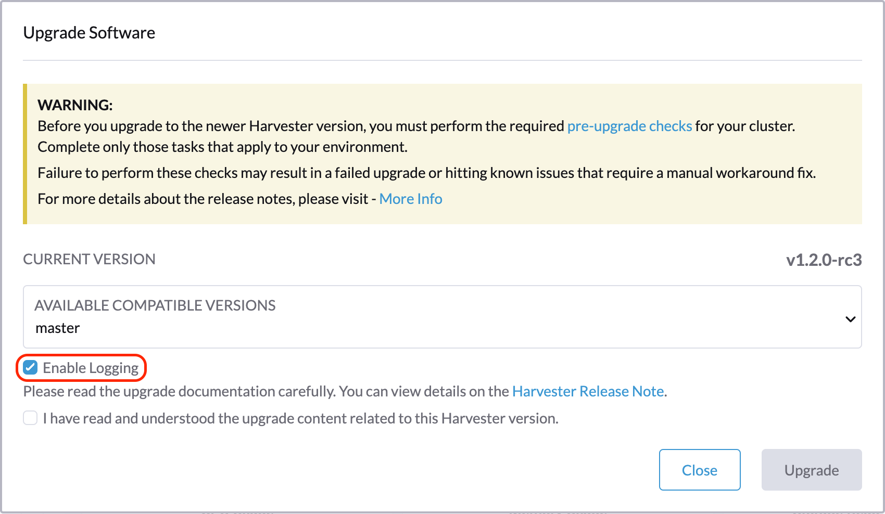
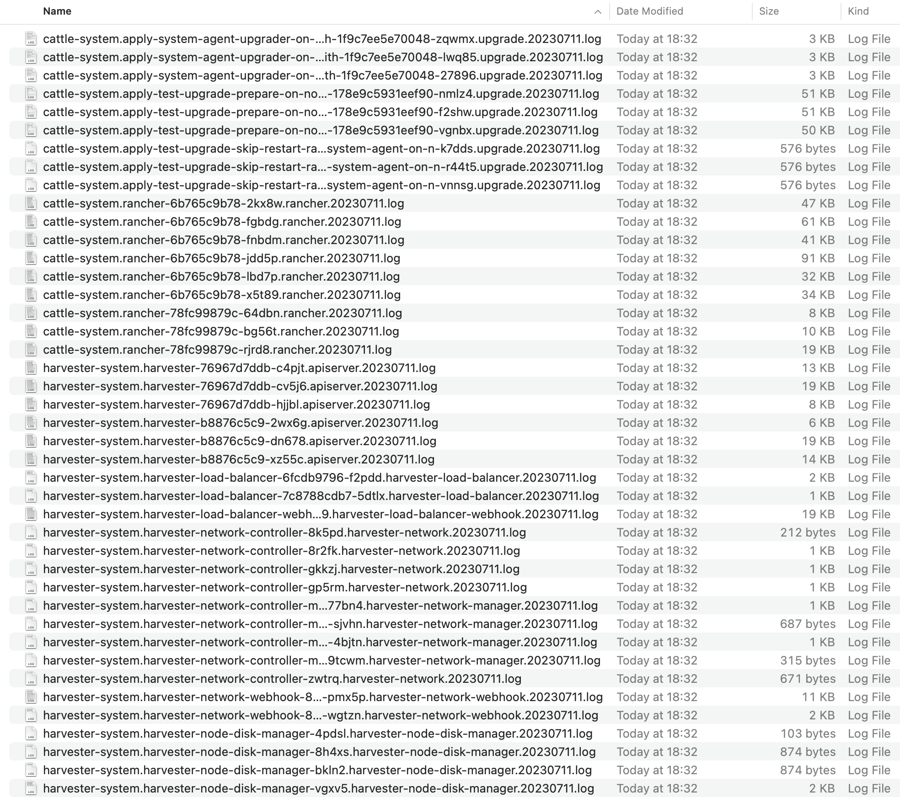
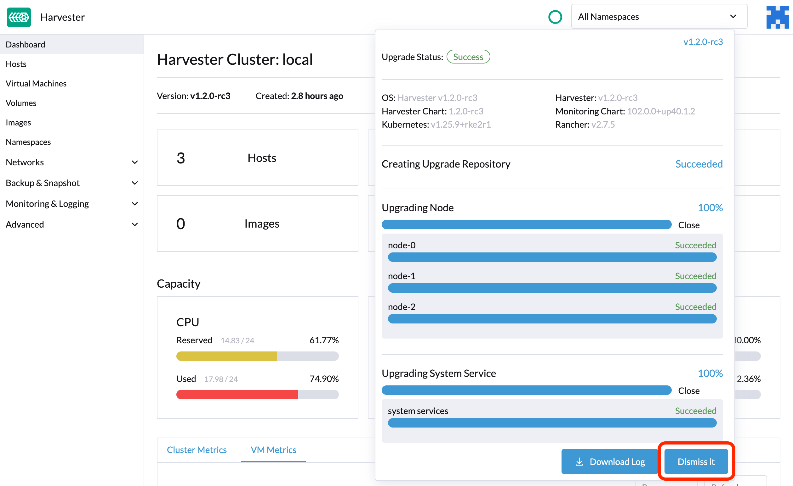

|
本文档采用自动化机器翻译技术翻译。 尽管我们力求提供准确的译文，但不对翻译内容的完整性、准确性或可靠性作出任何保证。 若出现任何内容不一致情况，请以原始 英文 版本为准，且原始英文版本为权威文本。 |
查错
升级流程
升级过程包括多个阶段。

第 1 阶段：提供升级储存库虚拟机
SUSE Virtualization 控制器下载一个发布 ISO 文件，并使用它来提供一个储存库虚拟机。虚拟机名称使用格式 upgrade-repo-hvst-xxxx。

网络速度和集群资源利用率会影响完成此阶段所需的时间。升级通常因网络速度问题而失败。
如果升级在此时失败，请在 重新启动升级 之前检查储存库虚拟机及其对应的 pod 的状态。您可以使用命令 kubectl get vm -n harvester-system 检查状态。
示例：
$ kubectl get vm -n harvester-system
NAME AGE STATUS READY
upgrade-repo-hvst-upgrade-9gmg2 101s Starting False
$ kubectl get pods -n harvester-system | grep upgrade-repo-hvst
virt-launcher-upgrade-repo-hvst-upgrade-9gmg2-4mnmq 1/1 Running 0 4m44s第 2 阶段：预加载容器镜像
SUSE Virtualization 控制器创建作业，从储存库虚拟机下载并预加载容器镜像。这些镜像是下一个版本所需的。
请留出一些时间，以便在所有节点上下载和预加载镜像。

如果在此时升级失败，请在 重新启动升级 之前检查 cattle-system 名称空间中的作业日志。您可以使用命令 kubectl get jobs -n cattle-system | grep prepare 检查日志。
示例：
$ kubectl get jobs -n cattle-system | grep prepare
apply-hvst-upgrade-9gmg2-prepare-on-node1-with-2bbea1599a-f0e86 0/1 47s 47s
apply-hvst-upgrade-9gmg2-prepare-on-node4-with-2bbea1599a-041e4 1/1 2m3s 2m50s
$ kubectl logs jobs/apply-hvst-upgrade-9gmg2-prepare-on-node1-with-2bbea1599a-f0e86 -n cattle-system
...第 3 阶段：升级系统服务
SUSE Virtualization 控制器创建一个作业来升级组件 Helm 图表。

您可以使用命令 apply-manifest 检查 $ kubectl get jobs -n harvester-system -l harvesterhci.io/upgradeComponent=manifest 作业。
示例：
$ kubectl get jobs -n harvester-system -l harvesterhci.io/upgradeComponent=manifest
NAME COMPLETIONS DURATION AGE
hvst-upgrade-9gmg2-apply-manifests 0/1 46s 46s
$ kubectl logs jobs/hvst-upgrade-9gmg2-apply-manifests -n harvester-system
...第 4 阶段：升级节点
SUSE Virtualization 控制器在每个节点上创建以下作业：
-
多节点群集：
-
pre-drain作业：在节点上实时迁移或关闭虚拟机。完成后，嵌入式 Rancher 服务会升级节点上的 RKE2 运行时。 -
post-drain作业：升级并重启操作系统。
-
-
单节点群集：
-
single-node-upgrade作业：升级操作系统和 RKE2 运行时。作业名称使用格式hvst-upgrade-xxx-single-node-upgrade-<hostname>。
-

您可以通过运行命令 kubectl get jobs -n harvester-system -l harvesterhci.io/upgradeComponent=node 检查每个节点上正在运行的作业。
示例：
$ kubectl get jobs -n harvester-system -l harvesterhci.io/upgradeComponent=node
NAME COMPLETIONS DURATION AGE
hvst-upgrade-9gmg2-post-drain-node1 1/1 118s 6m34s
hvst-upgrade-9gmg2-post-drain-node2 0/1 9s 9s
hvst-upgrade-9gmg2-pre-drain-node1 1/1 3s 8m14s
hvst-upgrade-9gmg2-pre-drain-node2 1/1 7s 85s
$ kubectl logs -n harvester-system jobs/hvst-upgrade-9gmg2-post-drain-node2
...|
如果此时升级失败，除非 SUSE 支持 指示，否则 不要重新启动 升级。 |
常见操作
重新启动升级
|
如果正在进行的升级失败或在 [Phase 4: Upgrade nodes] 处卡住，请勿重启 升级，除非 SUSE 支持 指示。 |
-
生成一个 支持包。
-
在 仪表板 屏幕上点击 升级 按钮。
停止正在进行的升级
|
如果正在进行的升级失败或在 [Phase 4: Upgrade nodes] 处卡住，请先确定原因。 |
您可以通过执行以下步骤停止升级：
-
登录到控制平面节点。
-
检索集群中
UpgradeCR 的列表。# become root $ sudo -i # list the on-going upgrade $ kubectl get upgrade.harvesterhci.io -n harvester-system -l harvesterhci.io/latestUpgrade=true NAME AGE hvst-upgrade-9gmg2 10m -
删除
UpgradeCR。$ kubectl delete upgrade.harvesterhci.io/hvst-upgrade-9gmg2 -n harvester-system -
恢复暂停的 ManagedCharts。
为了避免升级与其他进程之间的数据竞争，ManagedCharts 被暂停。您必须手动恢复所有暂停的 ManagedCharts。
cat > resumeallcharts.sh << 'FOE' resume_all_charts() { local patchfile="/tmp/charttmp.yaml" cat >"$patchfile" << 'EOF' spec: paused: false EOF echo "the to-be-patched file" cat "$patchfile" local charts="harvester harvester-crd rancher-monitoring-crd rancher-logging-crd" for chart in $charts; do echo "unapuse managedchart $chart" kubectl patch managedcharts.management.cattle.io $chart -n fleet-local --patch-file "$patchfile" --type merge || echo "failed, check reason" done rm "$patchfile" } resume_all_charts FOE chmod +x ./resumeallcharts.sh ./resumeallcharts.sh
下载升级日志
SUSE Virtualization 自动收集所有与升级相关的日志并显示升级过程。默认情况下，启用此功能。您也可以选择退出此类行为。

您可以点击*下载日志*按钮在升级期间下载日志归档。

日志条目将作为每个与升级相关的Pod的文件收集，即使是中间Pod。支持包提供了集群当前状态的快照，包括日志和资源清单，而升级日志保留了在升级过程中生成的任何日志。通过结合这两者，您可以进一步调查升级过程中的问题。

升级结束后，SUSE Virtualization 停止收集升级日志，以避免占用磁盘空间。此外，您可以点击*忽略它*按钮来清除升级日志。

|
无论升级结果如何， 然而，这些组件继续消耗集群资源，并可能阻止某些操作，例如更新存储网络设置（请参见 问题 #9599）。要释放资源并解除阻塞操作，请执行以下任一操作：
|
有关更多详细信息，请参阅 升级日志HEP。
|
存储与升级相关日志的卷的默认大小为1 GB。当发生错误时，这些日志可能会完全占用卷的可用空间。要解决该问题，您可以执行以下步骤：
|
清理未使用的镜像。
在 imageGCHighThresholdPercent KubeletConfiguration 中，的默认值为 85。当磁盘使用率超过 85% 时，kubelet 会尝试去除未使用的镜像。
在升级期间，每个 SUSE Virtualization 节点都会加载新镜像。当磁盘使用率超过 85% 时，这些新镜像可能会被标记为清理，因为它们未被任何容器使用。在隔离的环境中，从集群中删除新镜像可能会破坏升级过程。
如果您遇到错误消息 Node xxx will reach xx.xx% storage space after loading new images. It’s higher than kubelet image garbage collection threshold 85%.，请运行 crictl rmi --prune 在开始新升级之前清理未使用的镜像。

检查卡住的升级状态。
如果升级卡住且 SUSE Virtualization 界面未显示任何错误消息，请执行以下步骤：
-
使用命令
kubectl get pods -n harvester-system | grep upgrade检查在升级过程中创建的 pods。主脚本在
hvst-upgrade-xxxxx-apply-manifests-xxxxxpod 中。如果日志记录包含以下消息，managedChartCR 可能会导致问题。Current version: x.x.x, Current state: WaitApplied, Current generation: x Sleep for 5 seconds to retry -
使用命令
bundle检索有关kubectl get bundles -ACR 的信息。示例：
NAMESPACE NAME BUNDLEDEPLOYMENTS-READY STATUS fleet-local fleet-agent-local 1/1 fleet-local local-managed-system-agent 1/1 fleet-local mcc-harvester 0/1 Modified(1) [Cluster fleet-local/local]; kubevirt.kubevirt.io harvester-system/kubevirt modified {"spec":{"configuration":{"vmStateStorageClass":"vmstate-persistence"}}} fleet-local mcc-harvester-crd 1/1 fleet-local mcc-local-managed-system-upgrade-controller 1/1 fleet-local mcc-rancher-logging-crd 1/1 fleet-local mcc-rancher-monitoring-crd 1/1